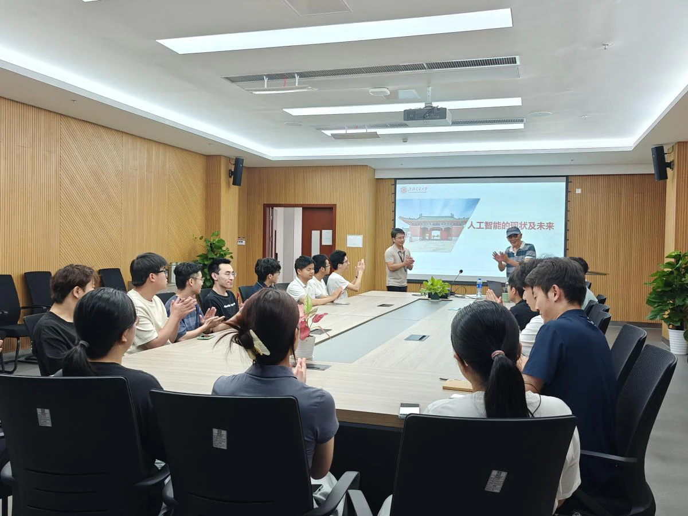
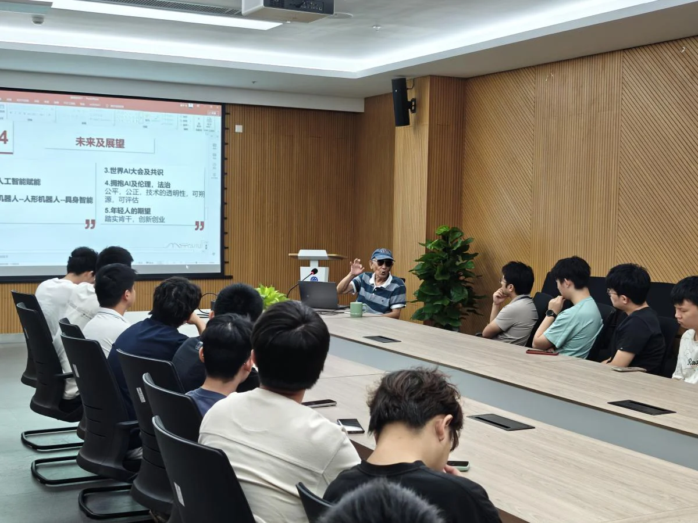

今天（8月21日）上午，上海交通大学施鹏飞教授应邀访问中国科学院宁波材料技术与工程研究所智能医学影像团队，并围绕人工智能的发展主题开展了深入的座谈交流。

施鹏飞教授是上海交通大学资深教授、博士生导师，长期致力于数字图像处理、计算机视觉及人工智能等领域的科研与教学工作，取得了丰硕的学术成果。他于2022年荣获CCF计算机终身贡献奖，并享受国务院特殊津贴。
在座谈中，施教授围绕人工智能的回顾、现状与未来三个维度系统性地讨论了其发展。首先，他回顾了人工智能历经的曲折发展历程，指出该领域并非一帆风顺，而是经历了“符号主义”、“专家系统”和“深度学习”这三起三落，并在此过程中逐步形成了符号主义、连接主义和行为主义三大主流学派。
随后，施教授深入剖析了当前人工智能发展的五个核心现状：一是从传统机器学习向深度学习的全面演进；二是以OpenAI和DeepSeek为代表的新兴力量推动技术开源与普及；三是不断突破规模定律，面向社会开源开放；四是大数据、高算力与大模型共同构成技术发展的基石；五是“AI+”与“+AI”双轮驱动，实现人工智能与各行各业深度融合。

最后，施教授就人工智能的未来提出五点展望：一是人工智能将作为关键赋能技术，推动经济社会的发展；二是机器人技术向人型机器人及具身智能方向持续演进；三是通过世界AI大会等国际平台凝聚共识，推动全球治理与合作；四是在快速发展中必须重视伦理与法制建设，强调公平公正、技术透明、可溯源和可评估的治理机制；五是对年轻一代提出殷切期望，鼓励他们既要踏实肯干，又要勇于创新创业，积极投身于这一充满潜力的领域，为人工智能的健康与可持续发展贡献智慧与力量。